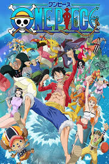

Favorites
Movies
GODFATHER 1&2
The Godfather and The Godfather Part II tell the saga of the Corleone family.Vito’s rise in the first film sets a powerful legacy.Michael’s descent in Part II shows the dark cost of power.Loyalty, betrayal, and ambition shape their intertwined fates.Both films masterfully blend family drama with brutal crime.Together, The Godfather and The Godfather Part II depict how power can make—and destroy—a dynasty.
THE READER

empty
TAXI DRIVER

empty
PARASITE

empty
IT CHAPTER 1

empty
COHERNCE

empty
THERE WILL BE BLOOD

empty
MAD MAX: FURY ROAD

empty
HARRY POTTER

empty
Shows
One Piece

One Piece is a legendary anime full of adventure, friendship, and challenges. The story follows Monkey D. Luffy and his crew as they search for the ultimate treasure.
HOMETOWN CHA CHA CHA
empty
VIKINGS
empty
THE LAST OF US (SEASON 1)
empty
PEAKY BLINDERS
empty
TOKYO REVENGERS
empty
IT'S OKAY TO NOT TO BE OKAY
empty
Books
empty
Games
ELDER SCROLL V: SKYRIM

This game doesn’t care about your plans. Wanna slay dragons? Cool. Wanna rob villagers and live in a cave? Also cool. Skyrim is peak freedom—like GTA but with swords, spells, and way more existential side quests. You’re not just playing a game, you’re living a second life. Cheat codes? Built-in. Morality? Optional. Vibes? Immaculate.
HALO 2001
Empty
DAVE MIRRA BMX

empty
SLEEPING DOGS

empty
HITMAN 2: SILENT ASSASIAN

Why the f* would someone not like Hitman?
They say Blood Money is best. Sure it is—but Silent Assassin is the bestestest.
Found it when I was 8 and didn’t understand a damn thing until 14. Meh… still thought it was a shooting game.
Completed it last year—literally finished the trilogy in reverse: Absolution —Blood Money — Silent Assassin.
Yeah, visually it’s the worst one. And that’s exactly why it’s the best one. Raw, confusing, and weird in all the right ways.
Gotta play it again someday in near future.
They say Blood Money is best. Sure it is—but Silent Assassin is the bestestest.
Found it when I was 8 and didn’t understand a damn thing until 14. Meh… still thought it was a shooting game.
Completed it last year—literally finished the trilogy in reverse: Absolution —Blood Money — Silent Assassin.
Yeah, visually it’s the worst one. And that’s exactly why it’s the best one. Raw, confusing, and weird in all the right ways.
Gotta play it again someday in near future.
PRICE OF PERSIA: CLASSIC

empty
MINECRAFT

empty
GTA VICECITY

New description...
Music artists
Polyphia

New description...
Radiohead
New description...
Shonar Bangla Circus
New description...